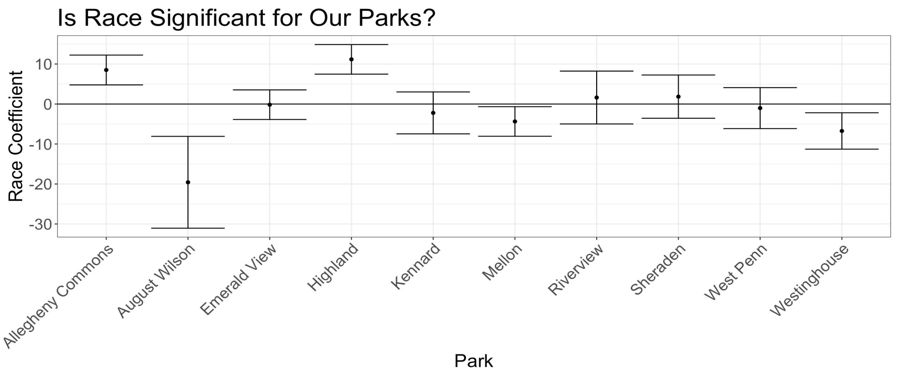

These three parks were chose to represent the three kinds of parks in Pittsburgh: regional parks, recreation-heavy parks, and small neighborhood parks.
Asterisks on the coefficients represent significance. The more asterisks on a coefficient, the more confident we are that the variable is having a high impact on visit rate. We see in this regression that walk time being under 20 minutes is the only variable that is highly important in all three regressions. The percentage of black residents in a black group is only coming in at highly correlated with visit right in Highland Park. For Highland Park, living in a neighborhood with a higher percentage of black residents is associated with an increase in visit rate. The coefficients for Percent Black for Mellon Park and Westinghouse Park are practically equal to zero.

After collecting data for nine parks, we were able to run a large regression with fixed effects for each park. Fixed effects tell us what effect is unique to each park and what effect is consistent across all parks. The large regression is somewhat convoluted, so the table above is just a summary of the coefficient on the percent black variable for each park.
The intervals represent the regression model's "best guess" for the true value on that coefficient. The intervals are calculated using 90% confidence intervals, meaning we are 90% certain that the true estimate falls within our range. Intervals that are completely above or below the horizontal zero line are significant, meaning that race is significant a factor in determining visitation to those parks. Parks where race matters include Allegheny Commons Park, August Wilson Park, Westinghouse, and Highland Park. After controlling for common effects across all parks, the Percent Black Coefficient on Mellon Park becomes slightly significant as well.
An interval above the line means that living in a neighborhood with a higher percentage of black residents is associated with an increase in visitation to that park.
An interval below the line means that living in a neighborhood with a higher percentage of black residents is associated with a decrease in visitation to that park.